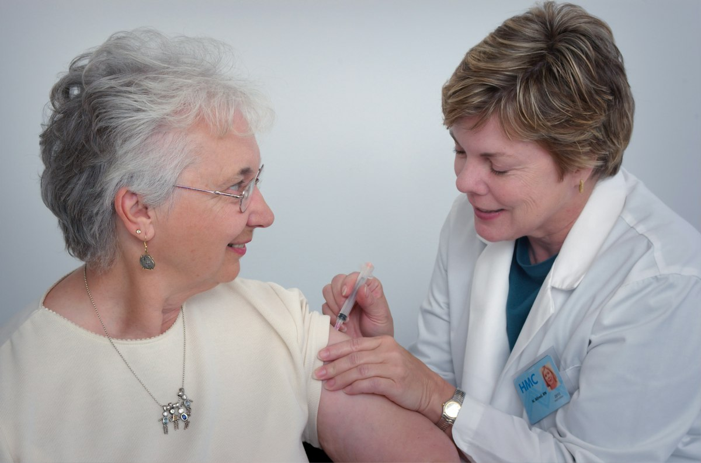
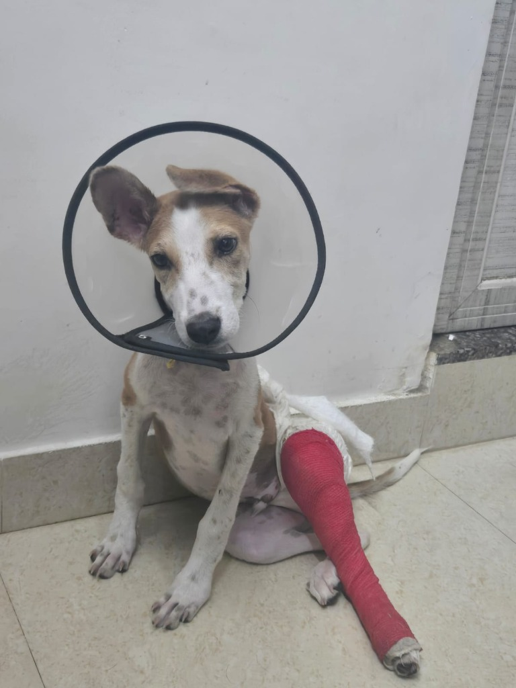
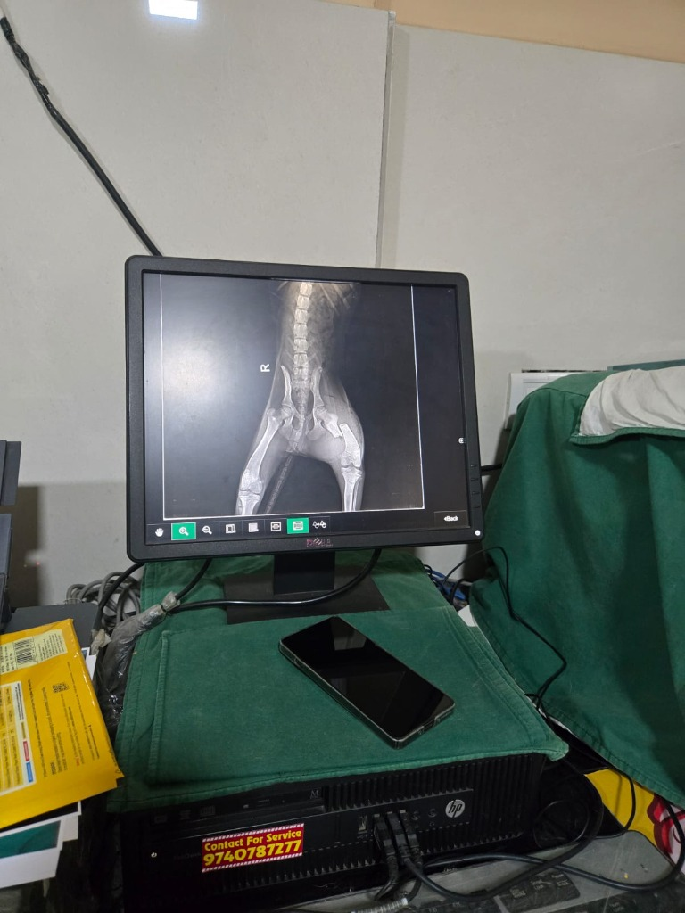
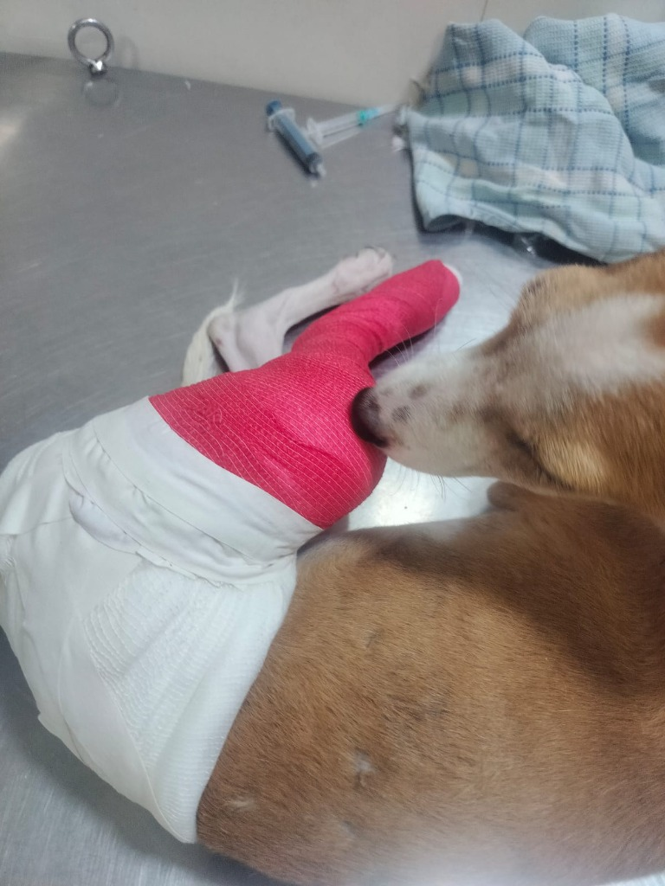
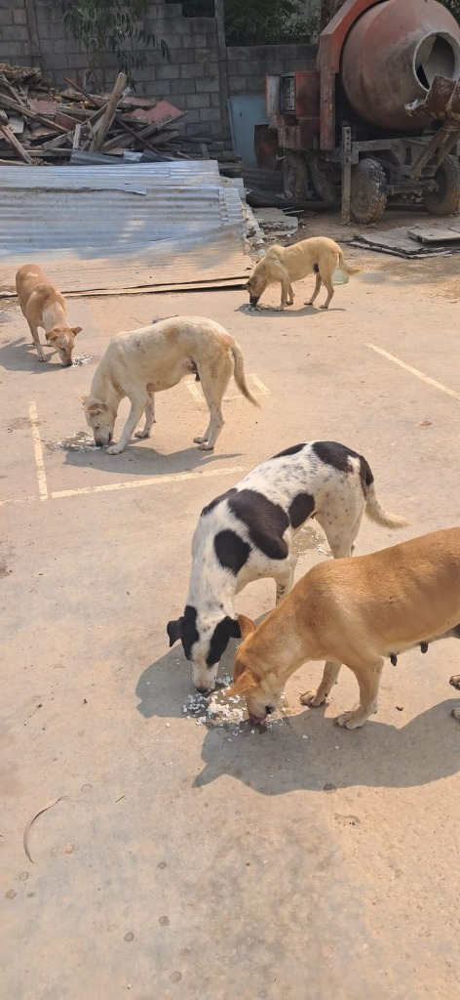
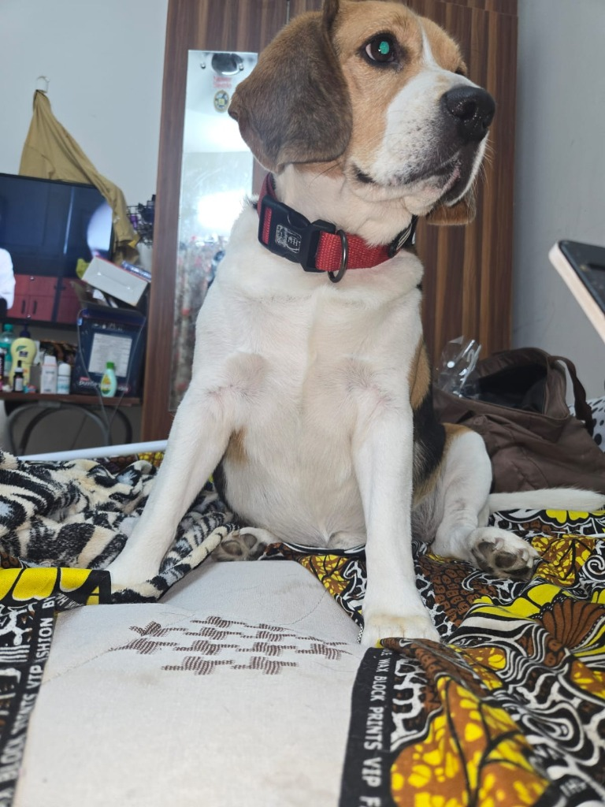
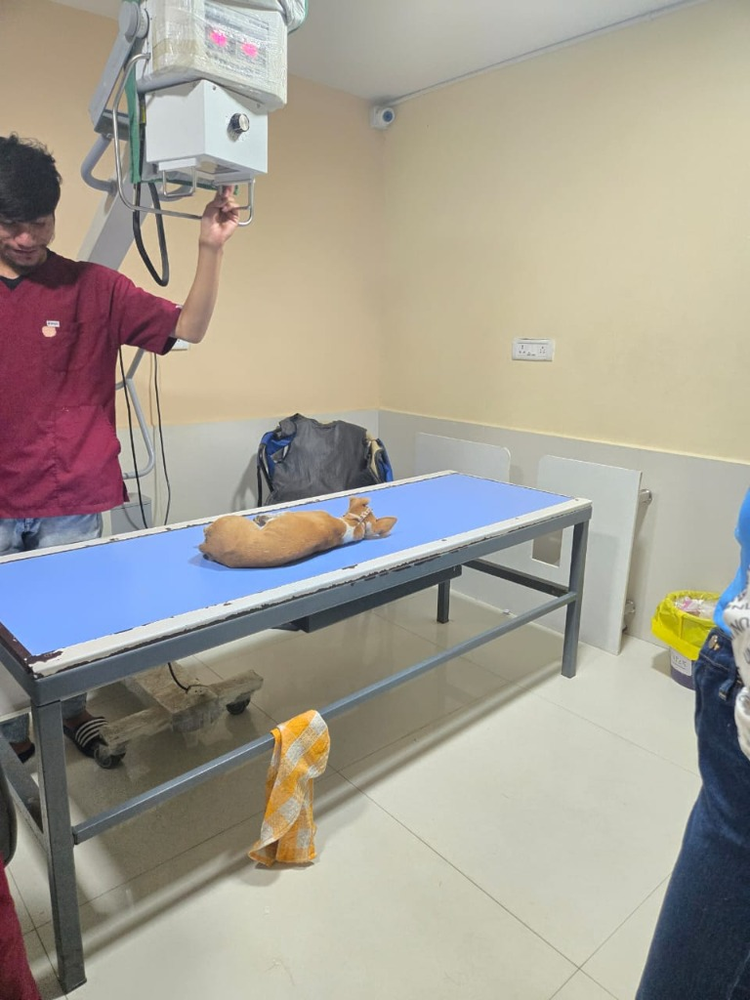
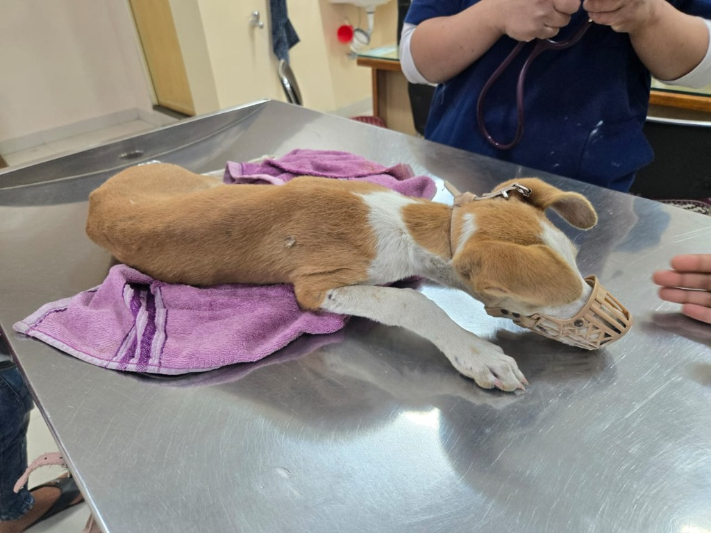
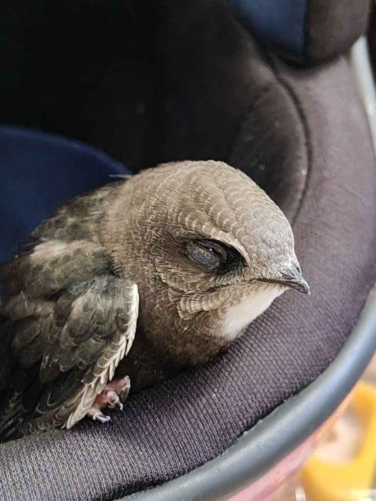
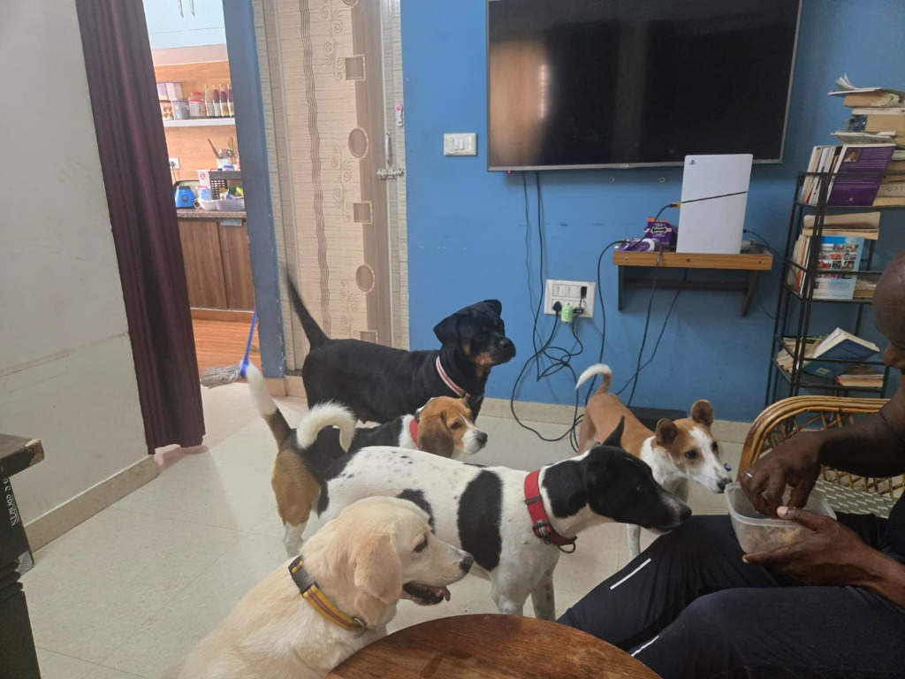

Food & Relief Initiative
Weekly food pantries, hot meals, and emergency crisis relief for families and individuals navigating hard seasons.
2026 Program Support Goal
$54,800 raised of $75,000 goal
Support Food & Relief
Your donation directly funds supplies, emergency assistance, and local volunteer operations for this specific program.
Animal Food Donation Pledge
Contribute physical pet & animal food supplies. No online payment required.
Thank You for Feeding Animals!
Your animal food donation pledge has been recorded. Our animal welfare coordinator will get in touch shortly.
Pledge Reference: TZF-FOOD-202610-001
Food Contribution: 10 kg Dry Dog Food
Handover Method: Drop-off at Station
Donor Contact: Priya (+91 98765 43210)
Status: ● Active Pledge Confirmed
Meeting real, immediate needs with lasting compassion.

“
"Having fresh groceries delivered to our porch when my hours were cut allowed us to keep our dignity and feed our kids."
— Elena & Marco, Community Members
Every Life Deserves a Second Chance.
An authentic documentary archive of emergency trauma triage, daily neighborhood pack feeding routes, clinical orthopedics, and the restorative dignity of foster healing across our community.
Rescued orphan puppy resting soundly in loving arms after emergency roadside intake.
The Rescue & Transformation Journey
From emergency community alert to vetted forever homes — every vulnerable animal travels through six compassionate stages of care.
Emergency Rescue & Recovery
Rapid-response roadside intake for vehicular collision victims, immediate pain relief, and temporary fracture splints.

🔍 ExpandDiagnostics & Surgical Care
High-precision digital X-ray scans identify pelvic and limb fractures, followed by orthopedic alignment and casting.

🔍 ExpandPost-Op Rehabilitation
Daily wound triage, antiseptic dressing, IV hydration, and supervised rest on clinic observation tables.

🔍 ExpandFeeding & Pack Nourishment
Scheduled daily community routes serving wholesome cooked rice, nutrient broth, and water to prevent disease.
 🔍 Expand
🔍 Expand
Sanctuary & Foster Care
Peaceful foster haven with warm winter sweaters, companion dogs, and specialized care for rescued swift birds.

🔍 ExpandHappy Endings & Adoption
Full physical restoration, complete vaccination, and transition into loving, vetted forever families.
Emergency Triage & Orthopedic Surgery
Precision veterinary medicine delivering second chances to injured street companions.
Pelvic & Femoral Diagnostic Scan
Precision digital radiograph displayed in surgical theater, mapping structural fractures prior to cast stabilization.
Fracture Cast & Protective Collar
Young puppy fitted with rigid pink cast and Elizabethan collar following accidental impact.

Veterinary Diagnostic Suite
Veterinary medical team calibrating overhead radiology scanners for emergency trauma analysis.

IV Hydration & Stabilization
Dehydrated rescue dog undergoing intravenous fluid restoration and temperature stabilization on examination table.
Daily Feeding Drives & Street Pack Bonding
Wholesome cooked nourishment served consistently across neighborhood routes.
Daily Community Pack Feeding
Field volunteers serving fresh cooked rice and protein broth to peaceful stray dogs in neighborhood lots.
Hunger and road collisions should never be the accepted reality for our neighborhood companions. Dignity begins with a warm meal.— Zion Loyals Field Route Team
Building Trust & Affection
Field volunteer sharing moments of tenderness and wholesome meals with community street animals on afternoon feeding rounds.
Foster Sanctuary, Recovery & Wildlife Care
A peaceful home environment where fragile bodies heal and cross-species friendships blossom.
Sweaters & Resident Companions
Convalescing puppy wearing cozy striped winter clothing thriving happily beside gentle resident companion beagle.

Avian Swift Nestling Shelter
Gentle hand-nourishment, warmth, and safe sheltered rehabilitation for an orphaned baby swift bird.

Sanctuary Pack Family Meals
Rescued dogs of diverse breeds living together peacefully indoors, receiving daily nourishment in our home shelter.
Strategic Pillars & Operational Focus
The foundational initiatives and methodology driving tangible daily impact across this domain.
How This Domain Delivers Outcomes
A transparent, step-by-step roadmap from initial intake to lasting community empowerment.
Frequently Asked Questions
Everything you need to know about this vertical, participation, and designated support.